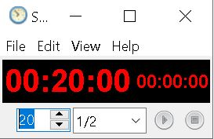

SnapTimer for Windows
SnapTimer is a portable countdown timer and stopwatch for Windows 10 and 11. It’s a Python port of Dan Hersam’s original SnapTimer.
For ADHD-friendly time management, try setting a short countdown for one task. Turn on Show elapsed time in Edit → Options → General to see how much time has passed and how much is left.
- Keep the clock visible while you work with a resizable compact view and an optional always-on-top setting.
- Integrated Windows notification area controls and kept support for existing SnapTimer settings.
- Python
- Tkinter
- Windows API
- PyInstaller
